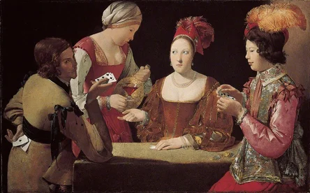

Baroque Art
What is
Baroque Art?
Baroque art was a style that flourished roughly between 1600 and 1750, mostly across Europe. The word "baroque" came from a Portuguese term for an irregularly shaped pearl, something ornate and unexpected.
If you had to compare Baroque to something modern, it would be closer to a thriller film than a documentary. Painters were not interested in calm, balanced compositions. They wanted drama, they wanted the person standing in front of the canvas to feel something immediately, before they even read the title.
Baroque art also had a practical purpose. For the Catholic Church, which funded much of it, these paintings were meant to communicate, persuade, and inspire. That urgency is part of why Baroque work still feels so alive.
The Catholic Church's Influence
Baroque art didn't emerge in a vacuum. It grew out of one of the most significant conflicts in European history, the Protestant Reformation, a movement that started in the early 1500s and led millions of people to break from the Catholic Church.
The Church responded, in part, through art. They commissioned sweeping, emotional paintings designed to:
- Demonstrate the grandeur and power of God
- Bring Bible stories to life for people who couldn't read
- Pull people back toward faith through sheer emotional force
This is why so many Baroque paintings depict scenes from scripture. Art was the most powerful mass communication tool of its time.
What to Look For
Three elements you'll find in almost every Baroque work.
| 01 | Chiaroscuro: Light and Dark Chiaroscuro (kee-AH-roh-SKYOO-roh) is Italian for "light-dark." Baroque painters were masters of contrast, bright light cutting through deep shadow, the way a single candle illuminates a face in a completely dark room. It creates focus, drama, and a sense that something important is happening right now. The artist most associated with this is Caravaggio, whose paintings look almost lit by a spotlight. |
| 02 | Drama and Movement Baroque figures are rarely calm or still. They twist, reach, recoil, or lunge. Fabric billows. Muscles strain. The scene looks like it was captured mid-action. This was a sharp contrast to earlier Renaissance painting, where figures tended to be composed and serene. Baroque art broke that stillness entirely. |
| 03 | Emotional Intensity Where earlier painting often showed idealized, expressionless faces, Baroque painters wanted viewers to see real human emotion, grief, terror, rapture, shock. Faces in Baroque paintings carry the full weight of what is happening to them. This rawness is one of the reasons these works still feel immediate and affecting centuries later. |
A Closer Look

Baroque: Featured Work
The Cheat with the Ace of Clubs
At first glance this looks like a card game among elegantly dressed strangers. Look closer and you'll see it's something else entirely, one player is cheating, quietly pulling a hidden card from behind his back while the others are distracted.
But the story isn't really the point. The painting is a showcase of Baroque technique. Notice how the candlelight falls unevenly, some faces are illuminated, others recede into shadow. That is chiaroscuro in action. Notice the tension in the faces: sidelong glances, suppressed expressions, hands doing one thing while eyes do another.
What makes this painting interesting is that it is not religious. It uses the full power of Baroque technique to tell a secular moral story. The darkness is not just atmospheric, it represents deceit.
Explore This Artwork
Select a question to read a simple answer
Select a question above to read the answer.
Why Baroque Art Still Matters
The Legacy of Dramatic Light
Baroque art demonstrated something that every filmmaker, photographer, and designer since has relied on: light is not just a technical element, it is an emotional one. The techniques developed by Baroque painters, especially chiaroscuro, influenced centuries of art and continue to shape how we tell visual stories today. When you see a close-up face dramatically lit from one side in a film, you are looking at the direct descendant of Baroque painting.
Beyond technique, Baroque art made the case that painting could be urgent and raw, that it didn't have to be calm or idealized to be great.